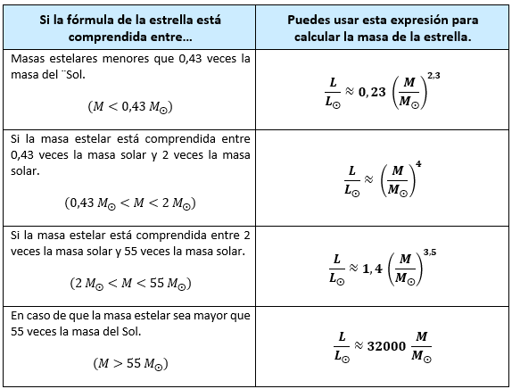

.- Cálculo de la masa de las estrellas de la secuencia principal. El diagrama Hertsprung-Russel.
Es posible representar las luminosidades de diferentes estrellas, relacionándolos con el tipo estelar y con la magnitud absoluta. Se obtiene así un diagrama denominado diagrama Hertsprung-Russel. Si se estudia una nueva estrella, conocida su luminosidad y temperatura, podemos buscarla en el diagrama y encontrar su masa aproximada a través de una expresión matemática que te muestro más adelante.
Fíjate que hay una zona de estrellas denominada “secuencia principal”. Es la franja central con forma sinuosa que se puede ver en el diagrama anterior.
Ahí es donde se encuentran la mayoría de estrellas que experimentan reacciones de fusión nuclear en la que el hidrógeno se fusiona para obtener helio y energía. Es posible obtener unas expresiones empíricas que nos permiten averiguar la masa aproximada de esta estrella. Estas expresiones solo son válidas para la región correspondiente a la secuencia principal. Se encuentran en la siguiente tabla:

Para usarlas hacemos lo siguiente:
1.- A partir de la luminosidad absoluta (L) y la temperatura superficial de la estrella, o bien combinando el radio estelar con la temperatura, intentamos localizar la posición de la estrella en la secuencia principal.
2.- Comprobamos la zona de la secuencia en que se encuentra y donde más o menos se encuentra su masa..
3.- Una vez averiguada la zona, buscamos en la tabla de fórmulas para calcular la masa, cuál es la fórmula más conveniente y la aplicamos para averiguar su masa real. En realidad no calculamos cuál es la masa real sino el cociente entre su masa y la del Sol. Si por ejemplo nos sale que el cociente es de 4,25 esto significa que esa estrella es 4,25 veces más masiva que el Sol.
Puedes ver un vídeo explicativo en el enlace: